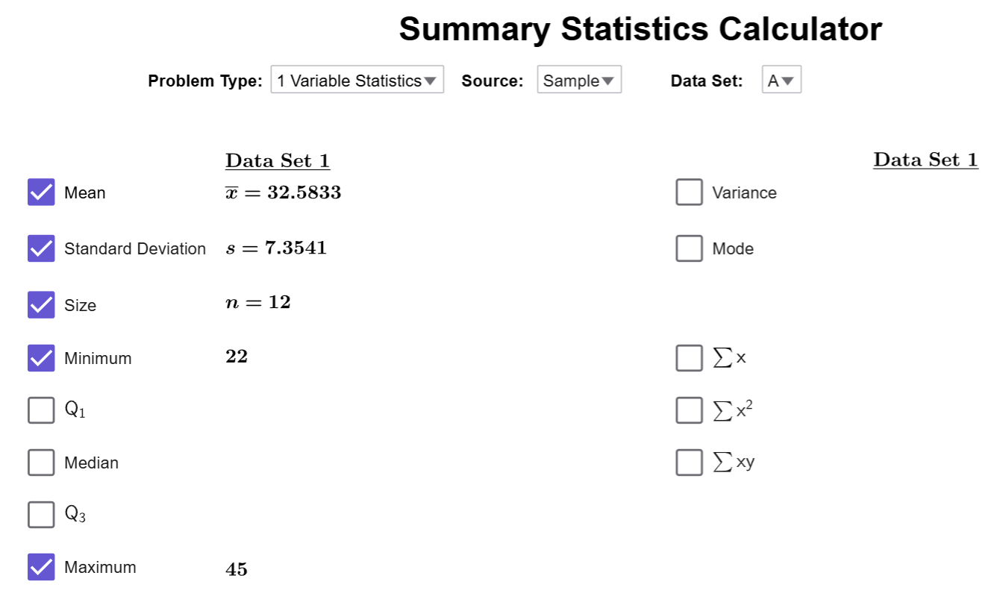

Understanding the Range of a Data Set
The range measures the spread of a dataset by subtracting the minimum value from the maximum. It’s easy to calculate and provides a quick estimate of variability. However, since it only uses two values, it can be misleading if outliers are present.
Range
What is the Range of a Dataset?
The range of a data set is given by the formula: \[ \text{Range} = \text{maximum value} - \text{minimum value} \]
Advantages of the Range
- Simple to Calculate: The range is easy to compute—just subtract the minimum value from the maximum value.
- Quick Estimate of Data Spread: It provides a quick sense of the overall spread of the data.
- Useful for Small Data Sets: For small or preliminary data sets, it can give a rough indication of variability.
- Identifies Outliers Easily: A large range may indicate the presence of outliers or extreme values.
Disadvantages of the Range
- Ignores Most Data Points: The range only depends on two values (maximum and minimum), ignoring all other data points.
- Sensitive to Outliers: A single extreme value can drastically affect the range, making it an unreliable measure of variability.
- No Information on Data Distribution: The range tells us nothing about how data is distributed between the minimum and maximum values.
- Limited Use in Large Data Sets: In larger data sets, the range becomes less informative because it doesn’t reflect the overall variability accurately.
Example
Scientists are tracking the migration distances of a species of birds over several years. The distances (in miles) recorded for a sample of 10 birds are as follows:
| Distance (in miles) | |||||||||
|---|---|---|---|---|---|---|---|---|---|
| 354 | 400 | 412 | 375 | 389 | 410 | 368 | 390 | 405 | 392 |
Answer the following questions based on the data:
- Part A: Find the range of the migration distances.
- Part B: Explain what the range tells us about the variation in the birds' migration distances
Solution
- Part A: To find the range of the migration distances, we calculate
the difference between the maximum and minimum values:
- Maximum distance = 412 miles
- Minimum distance = 354 miles
Range = 412 - 354 = 58 miles
- Part B: The range of 58 miles represents the spread of the migration distances among the 10 birds. A relatively small range suggests that the birds have similar migration patterns, with no extreme outliers in the distances traveled.
$$\tag*{\(\blacksquare\)}$$
Example
A sociologist is studying the ages of participants in a community program aimed at improving digital literacy. The ages (in years) of 12 participants are as follows:
| Age (in years) | |||||||||||
|---|---|---|---|---|---|---|---|---|---|---|---|
| 22 | 25 | 31 | 28 | 24 | 35 | 45 | 41 | 29 | 33 | 38 | 40 |
Use the Summary Stats Calculator to find the range of the participants’ ages.
Solution
Upload the dataset to the Summary Stats Calculator, and then click on
the Minimum and Maximum checkboxes to
reveal the smallest and largest values in the dataset. If you did everything
correctly, the calculator should look like this:

Using the maximum and minimum value, we calculate
the range to be \[45-22=23.\]
$$\tag*{\(\blacksquare\)}$$
Conclusion
The range is a simple tool for understanding data spread but lacks detail about overall variability. While useful for quick insights, it should be paired with other measures like variance or standard deviation for a more complete analysis.